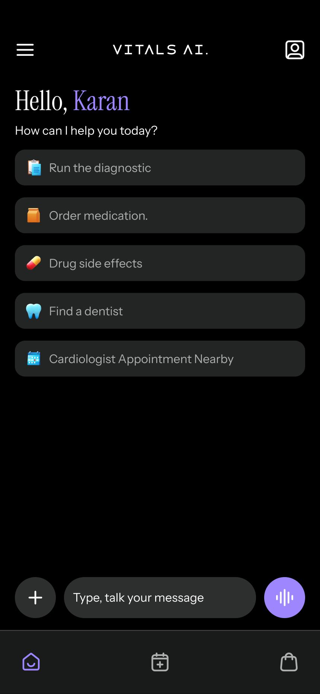
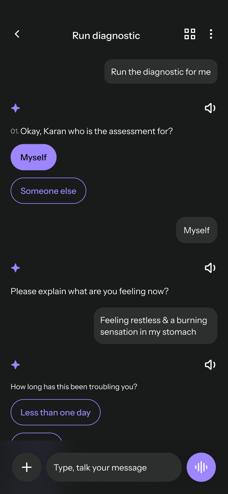
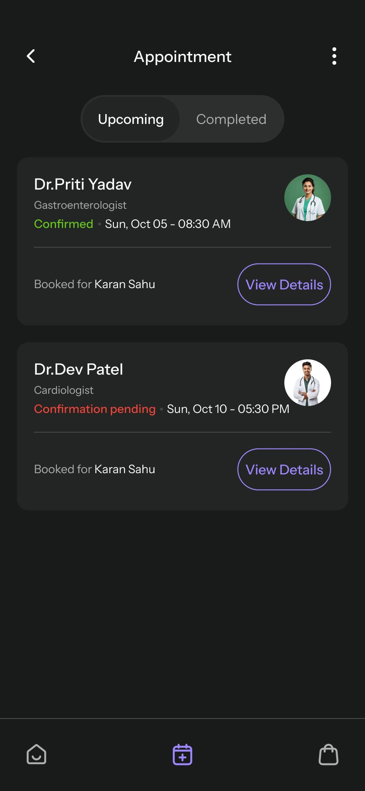
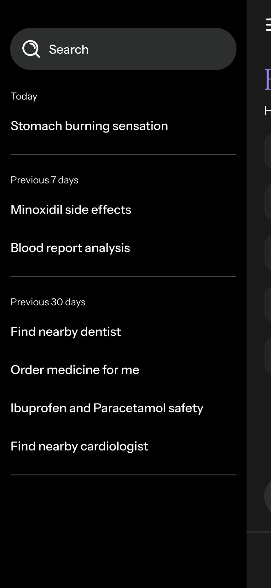
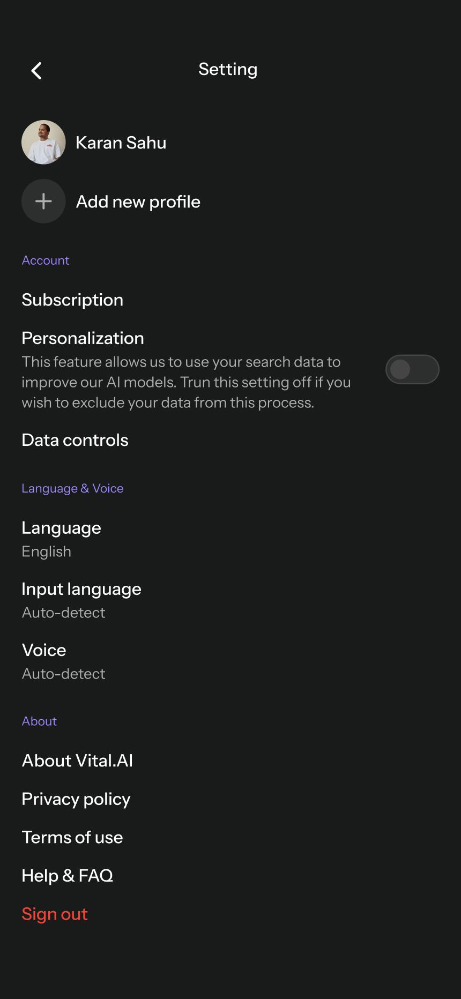
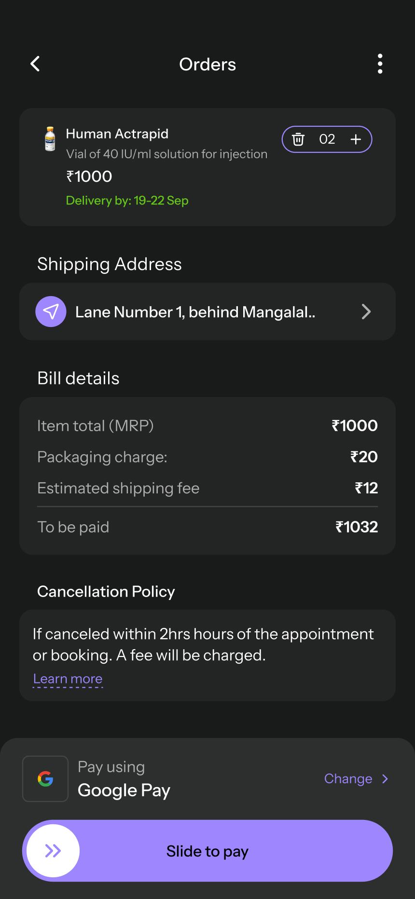

Vital AI
A doctor consultation app integrated with AI for symptom analysis and diagnosis, designed to connect AI-assisted health guidance with practical access to doctors, appointments, medicines and report analysis.

Overview
Vital AI is a mobile doctor-consultation experience integrated with AI for symptom analysis and diagnosis. The concept brings together AI-assisted guidance and access to healthcare resources in one journey.
My role
I worked as the product designer responsible for the full design process.
- UX research
- Information architecture
- Wireframing
- UI design
- Prototyping
- Engineering collaboration
- Reusable design components and interaction guidelines
Problem statement
People can struggle to understand health issues, find appropriate guidance and access healthcare resources quickly. The product challenge was to bring information, AI-assisted guidance and healthcare access together in a simple mobile experience.
User needs
The project focused on three main user types, with journeys spanning AI guidance, healthcare access and account management. The case study also maps common tasks such as asking questions, booking appointments, ordering medicines and reviewing reports.
Understand a health concern
Ask questions through text or voice and use a quick diagnostic flow for symptom analysis.
Access a doctor
Find a nearby doctor, review consultation details and book a preferred date and time.
Manage health tasks
Order medicines, review appointments and orders, and upload reports for analysis.
Information architecture & flows
The IA maps the app from onboarding and verification through Home, AI interaction, use cases, appointments, orders, profile and settings.
Design system
The supplied design presentation defines a visual system using Instrument Serif for display typography and Instrument Sans for headings, subheadings and body copy.
Final product experience
The mobile experience brings multiple healthcare journeys into one consistent interface.
AI-assisted diagnosis
A quick diagnostic flow asks questions, analyzes symptoms and can suggest doctor consultation when required.
Doctor discovery & booking
Users can find nearby doctors, review specialty, experience, distance and consultation fee, then book an appointment.
Medicine ordering
Voice, text and camera-assisted input help users identify medicines; prescriptions are handled when required.
Report analysis
Users can upload medical reports and receive an AI-powered analysis and summary.

Home & navigation
AI conversation
Appointments
Settings & personalization
Profile & account
Report analysisImpact
The supplied case study focuses on creating a more accessible, guided healthcare journey through AI-assisted interactions and connected healthcare services. No quantified product metrics are provided in the source presentation, so this case study does not claim numerical outcomes.
What I learned
Designing an AI-assisted healthcare experience requires clear boundaries between AI guidance and human healthcare access. The interface needs to make next steps understandable while keeping important actions such as appointments, medicine orders and report review easy to reach.
Want to talk through an AI product challenge?
Let's connect and explore the problem, the users, and the experience.